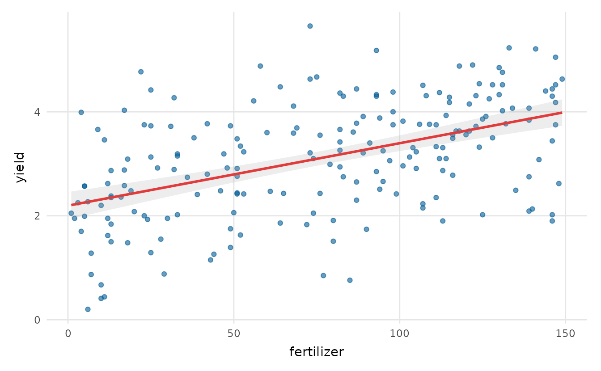
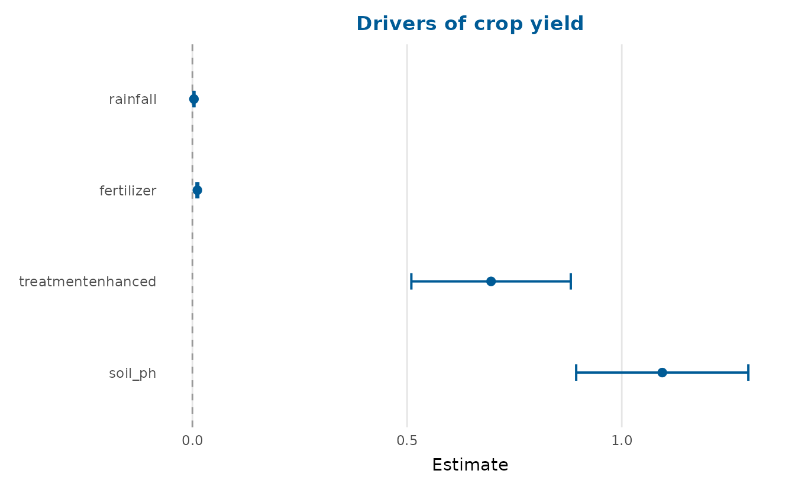
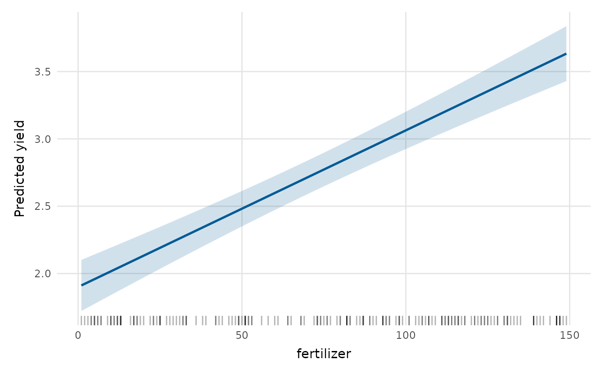
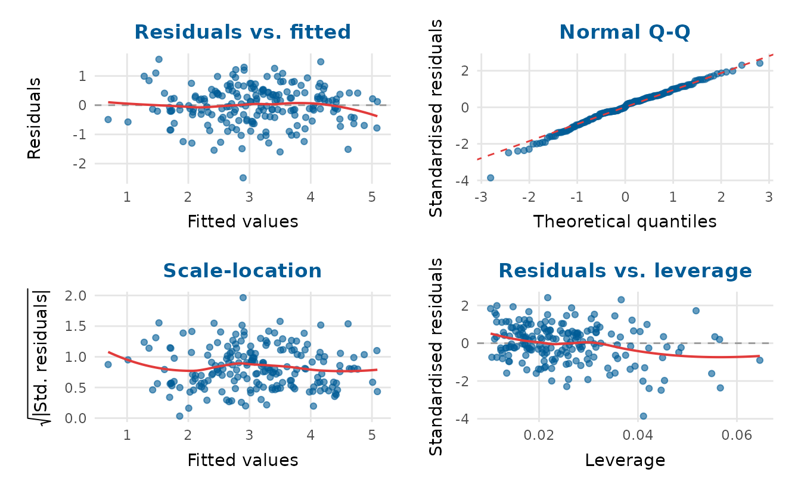
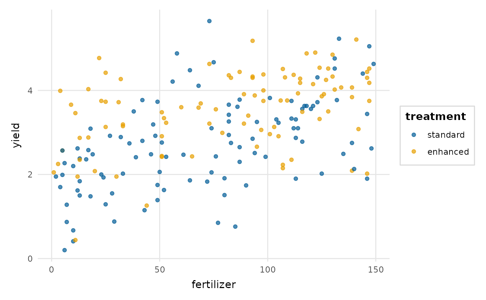

depictr is a single, consistent toolkit of plots
that span the whole analysis workflow, from a first look at the data,
through model estimates and predictions, to diagnostics, uncertainty and
reporting. Every plotting function returns a ggplot2 object
(Wickham,
2016) (or a patchwork for composite panels), so
you can keep customising with the usual + syntax, and every
plot shares one theme, one palette and one set of label conventions.
The package ships with three reproducibly simulated datasets used
throughout the documentation: lexical_decision,
wellbeing_survey and crop_yield.
A tour by task
Begin with the data. explore_bivariate() chooses a
suitable plot for any pair of variables.
explore_bivariate(crop_yield, fertilizer, yield)
Turn next to the model. After fitting it,
coefficient_plot() draws a forest plot of the
estimates.
fit <- lm(yield ~ rainfall + fertilizer + soil_ph + treatment, data = crop_yield)
coefficient_plot(fit, order = "descending", title = "Drivers of crop yield")
#> `height` was translated to `width`.
To see what the model implies, effects_plot() traces the
predicted response as one predictor varies.
effects_plot(fit, "fertilizer")
residual_diagnostics_plot() gathers the usual checks of
the fit into one panel.

Finally, posterior_plot() summarises posterior or
simulation draws as a point with nested intervals.
set.seed(1)
draws <- data.frame(intercept = rnorm(2000, 2, 0.2),
fertilizer = rnorm(2000, 0.012, 0.002),
rainfall = rnorm(2000, 0.004, 0.001))
posterior_plot(draws)
The shared spine: tidy_estimates()
Most of the model functions rest on tidy_estimates(),
which turns a model, or a data frame of pre-computed estimates, into one
standard table. Because the plotting functions also accept that table,
estimates from any source (Bayesian posteriors, bootstrap intervals, or
figures taken from a paper) can be supplied directly.
tidy_estimates(fit)
#> term estimate std.error conf.low conf.high
#> 1 (Intercept) -7.064270854 0.7031785868 -8.451082511 -5.677459196
#> 2 rainfall 0.003656021 0.0005798092 0.002512519 0.004799523
#> 3 fertilizer 0.011631807 0.0010495207 0.009561938 0.013701675
#> 4 soil_ph 1.094297128 0.1016434909 0.893835424 1.294758833
#> 5 treatmentenhanced 0.695586504 0.0941422178 0.509918841 0.881254167A consistent, accessible look
theme_depictr(), depictr_palette() and
scale_colour_depictr() style your own plots too:
library(ggplot2)
ggplot(crop_yield, aes(fertilizer, yield, colour = treatment)) +
geom_point(alpha = 0.7) +
scale_colour_depictr() +
theme_depictr()
The qualitative palette is based on the Okabe-Ito set (Okabe & Ito, 2008), which stays distinguishable under the common forms of colour-vision deficiency; sequential and diverging variants are available too. Preview them with:
palette_preview(type = "all")
Where to next
The remaining articles go into each area in turn.
vignette("exploring-data") covers distributions,
categories, bivariate plots, scatter-plot matrices, correlations,
missingness, outliers and summary tables.
vignette("model-estimates") covers forest plots, model
comparison, predicted values, interactions, random effects and
goodness-of-fit. vignette("diagnostics-and-uncertainty")
covers residuals, influence, Q-Q, ROC, calibration, confusion matrices,
posteriors and power curves. Two further articles,
vignette("multivariate-and-survival") and
vignette("time-series"), cover the remaining methods.